Claude Code 多 Agent 图解：SubAgent 实现机制怎么做？
大家好，我是小林。
最近不少朋友跟我反馈，说 AI Agent 岗的面试越来越多，十有八九都要问 Multi-Agent，什么「多 agent 之间怎么通信」「一个 agent 搞不定的任务怎么拆」「并发 agent 怎么调度」。
所以这篇文章我就想带你从源码视角，把 Claude Code 的多 Agent 机制彻底讲明白，目标是让你看完能同时 get 三个问题：
- 第一，架构是怎么设计的，多个 agent 之间怎么隔离、各自跑各自的。
- 第二，协同机制是怎么跑起来的，父子 agent 怎么分工，多个 agent 怎么并发。
- 第三，通信方式是怎么设计的，agent 之间是直接调函数，还是有别的巧妙设计。
Claude Code 里跟「多 agent」沾边的代码其实有三套不同的机制：常规 Subagent、Fork Subagent、Coordinator 协调者模式。
后面我会按由浅入深的顺序，一个个讲清楚。
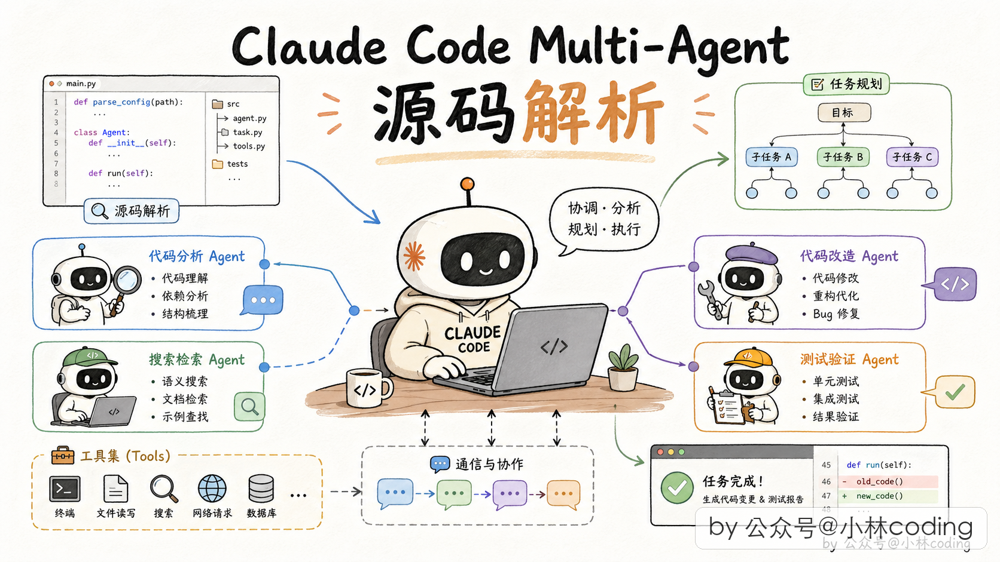
一、先搞明白 Multi-Agent 到底是个啥
在扒源码之前，我想先花一点篇幅，把 Multi-Agent 这个词的底层逻辑讲清楚。因为我发现很多人连「为啥要有多 agent」都没想明白，光盯着代码看是看不懂的。
为什么一个 agent 不够用？
我们先回到最朴素的 agent 模型：一个 LLM + 一堆工具 + 一个循环。你给它一个任务，它自己决定调什么工具、调几次，直到做完。这就是经典的 agentic loop。
看起来挺强的是吧？但一到真实项目里，问题就出来了。
想象你让一个 agent 去做这么一件事：「调研下 React 18 的新特性，然后在我的项目里实现一个 useTransition 的例子，最后帮我把代码评审一遍」。
这一套下来有三个麻烦：
第一，上下文会爆炸。调研阶段要看大量文档和 StackOverflow 链接，实现阶段要读项目代码，评审阶段又要重新读实现。三个阶段的内容全塞到一个 agent 的上下文里，token 蹭蹭往上涨，后面直接塞不下。
第二，职责混乱。一个 agent 既当研究员又当程序员又当评审员，它自己都不知道现在是什么角色，容易跑偏。比如调研到一半就开始写代码了，代码写到一半又去查文档。
第三，没法并发。一个 agent 一次只能做一件事，它在查文档的时候，项目代码就在那干等着。
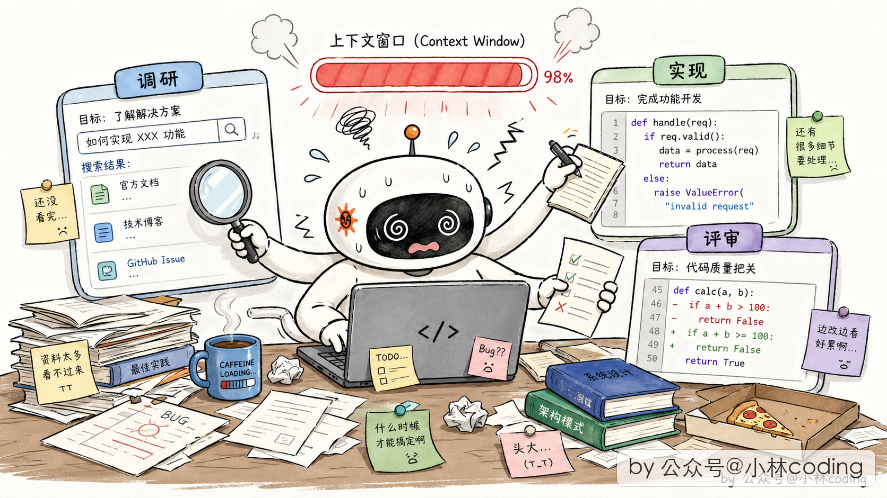
单 agent 硬扛三件事
老板派活的思路
这时候 Multi-Agent 的思路就来了。说白了，就像一个老板带团队：
老板不自己一头扎进代码里，而是把任务拆成几块，派给不同的「专家」。研究员去调研，工程师去写代码，评审员去挑错。老板自己只负责看大方向、收结果、做决策。
这样一来：每个专家的上下文是干净的（只装自己领域的信息）；职责也清楚（研究员就好好查资料别去写代码）；多个专家还能同时开工。
这就是 Multi-Agent 的核心思想：把一个大任务拆给多个职责清晰的 agent 去做，它们之间通过某种方式通信和协作。
Multi-Agent 的三种常见形态
绕开花哨的术语，Multi-Agent 系统在工业界落地时，一般就三种形态。
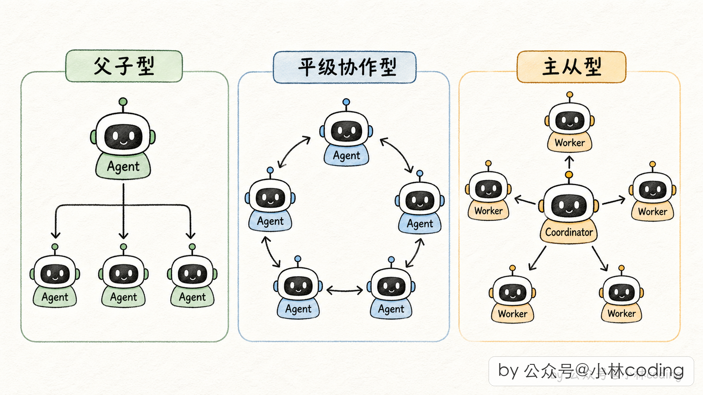
第一种，父子型。主 agent 处理整个任务，遇到某个子问题时派一个 subagent 出去搞定，拿结果回来接着干。这是最常见的，Claude Code 里的 Task 工具就是这种。
第二种，平级协作型。几个 agent 职责对等，通过共享状态或者消息互相协作。不过这种在工程上比较难落地，状态同步很麻烦。
第三种，主从型（Coordinator-Worker）。有一个专门的「协调者 agent」，它自己不干活，只负责派 worker、收结果、做合成。worker 之间互不通信，全靠协调者调度。这种是高并发场景的标配。
Claude Code 源码里，常规 Subagent 对应父子型，Coordinator 模式对应主从型，Fork Subagent 是父子型的一个特殊优化版本（跟 cache 有关，后面讲）。
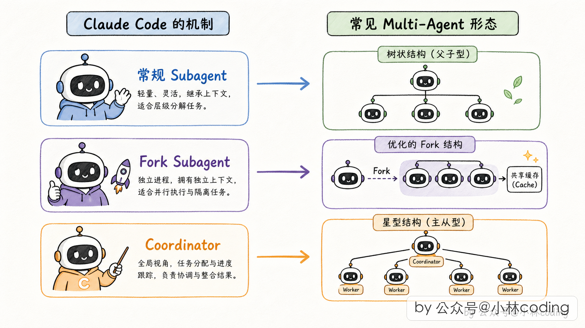
subagent 在 Claude Code 里到底长啥样？
讲到这儿可能还有朋友有点虚：「subagent 听起来挺抽象，它在 Claude Code 里到底长啥样，看得见吗？」
我举个真实能感知的场景你就懂了。
你跟 Claude Code 说「调研一下这个项目的认证模块」，它自己判断一下：这活得派个「侦察兵」去干，而不是我亲自扎进去。于是它在内部调了一个叫 Agent 的工具（对，这个工具的名字就叫 Agent），把任务交给一个叫 Explore 的内置 subagent 去跑。
Explore 带着一套精简的工具池（只有读文件、搜代码这些只读工具），带着一份独立的上下文，跑完调研把结果打包回来交给主 agent。主 agent 收到结果后，该改代码改代码、该回答回答。
所以 subagent 不是什么玄学，说白了就是「主 agent 通过一个特定工具派出去的另一个独立 agent 实例」。每一个 subagent 都是一个真实存在的执行单元，有自己的工具池、上下文、生命周期。
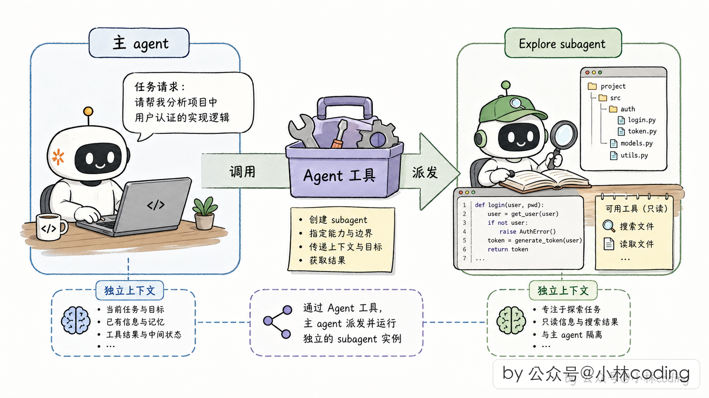
明白了这些，咱们就可以进入 Claude Code 的源码了。
二、Subagent 的隔离机制
在讲通信、讲并发之前，我想先从 Claude Code 多 agent 设计里最关键的一环讲起：隔离机制。
为什么隔离最关键？你想想，多 agent 系统本质就是「一堆 agent 共处一个进程、共享一个底层运行时」。如果隔离做得不好，一个 subagent 偷偷污染了父 agent 的状态、或者调了不该调的工具，整个系统就会乱成一锅粥。
Claude Code 在 subagent 启动时，把隔离做到了两个维度：工具隔离（不给子 agent 它不该有的工具）和 上下文隔离（不让子 agent 搅乱父 agent 的运行时状态）。咱们一个一个看。
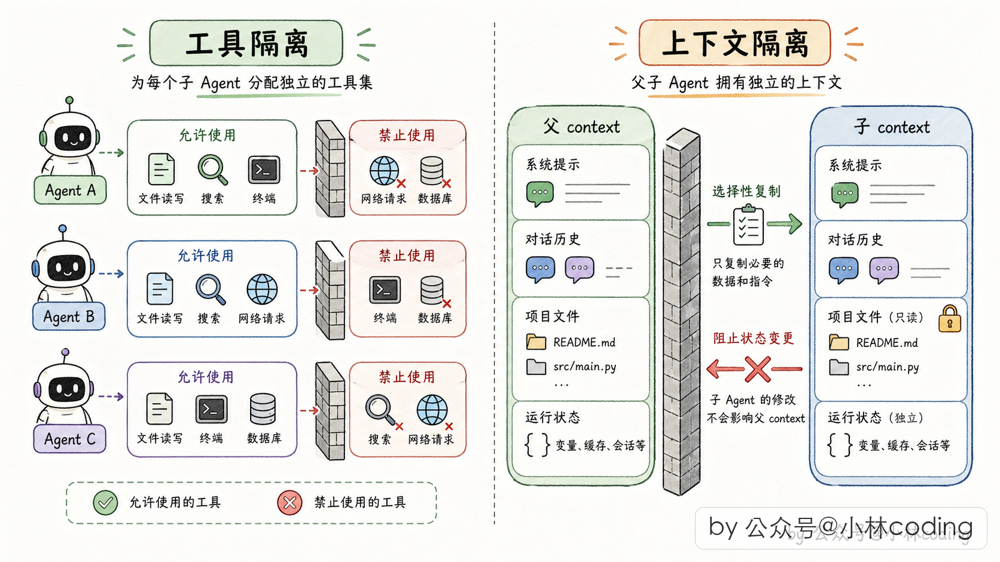
第一维度：给子 agent 发一个定制工具箱
先说工具隔离。这是 Claude Code 多 agent 设计里最容易被忽略，但又很重要的一环。
什么意思呢？主 agent 拥有一大堆工具（读文件、写文件、执行命令、派 subagent、问用户问题等等几十个），但你不能把这堆工具原封不动地丢给 subagent。为啥？
你想想，如果 subagent 也能调派新 subagent 的工具，那它就能派子子 agent，子子 agent 又派子子子 agent，层层嵌套没完没了，token 消耗直接起飞。
再比如主 agent 用来管理任务列表的工具，是给主 agent 的大脑用的，subagent 跟着瞎写会污染主 agent 的待办状态。
所以 Claude Code 给 subagent 发工具的思路是「按 agent 身份走三道准入门」：
第一道门是「所有 subagent 通用黑名单」。这道门里被禁的工具有几类：
- 能派新 subagent 的工具：防止子再派孙、孙再派重孙的递归嵌套
- 能主动问用户问题的工具：子 agent 不该抢主 agent 的对话权，用户是跟主 agent 说话的
- 能切换规划模式的工具：规划模式是主 agent 用来跟用户对齐方案的，子 agent 没资格切
- 能停止其他任务的工具：任务管理是主线程的专属权力，子 agent 乱停会天下大乱
第二道门是「自定义 agent 多套一层黑名单」。用户自己写的 agent（比如在项目里自己配的那种 Markdown agent）比内置 agent 要再严一点，因为用户写的没经过官方审核，多防一道更安全。
第三道门反过来，是「后台异步 agent 走白名单」。这类 agent 是完全后台跑的，没法跟用户交互，所以只准用事先圈定好的一小批工具（读文件、搜代码、执行命令、编辑文件这些）。白名单的哲学是「默认不准用，明确列出来的才能用」，比黑名单更保险。
三道门走下来，每个 subagent 拿到的都是一份量身定制的工具池，既够它干活，又不会越权。
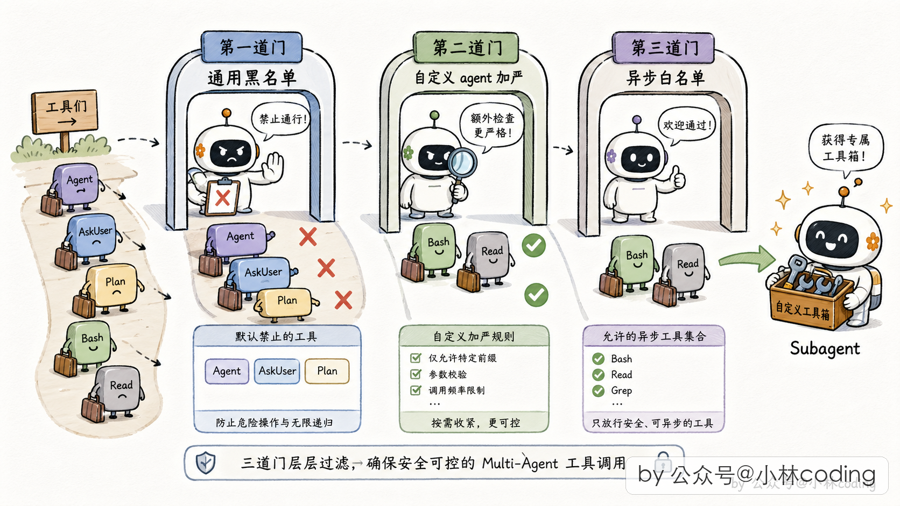
这个机制在源码里其实就是一个过滤函数：
// src/tools/AgentTool/agentToolUtils.ts:70
export function filterToolsForAgent({ tools, isBuiltIn, isAsync, permissionMode }): Tools {
return tools.filter(tool => {
if (tool.name.startsWith('mcp__')) return true // MCP 工具全放行
if (ALL_AGENT_DISALLOWED_TOOLS.has(tool.name)) return false
if (!isBuiltIn && CUSTOM_AGENT_DISALLOWED_TOOLS.has(tool.name)) return false
if (isAsync && !ASYNC_AGENT_ALLOWED_TOOLS.has(tool.name)) {
return false
}
return true
})
}
可以看到就是顺着「全局黑名单 → 自定义 agent 加严 → 异步白名单」这三道条件依次判定。最后留下来的，才是这个 subagent 能用的工具。
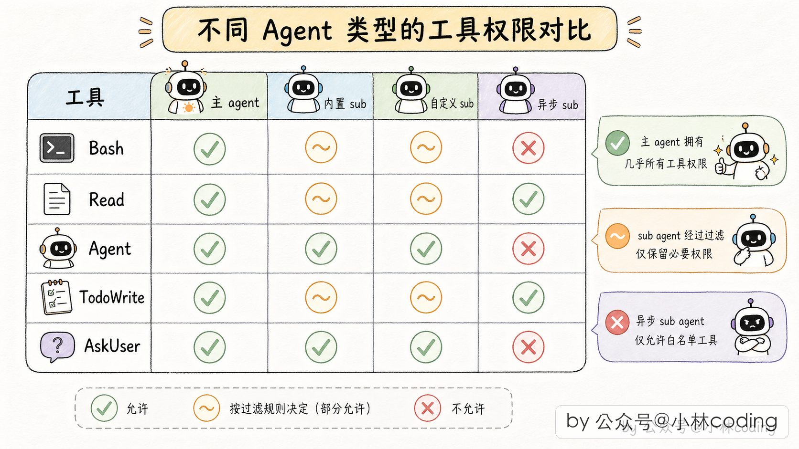
这个设计看着简单，其实挺有工程智慧的。我在设计自己的多 agent 系统时，就学到了一条原则：不要假设所有 agent 都能用所有工具，按 agent 类型做细粒度的权限控制。
第二维度：搭一个隔离的运行环境
说完工具，再来聊第二维度：上下文隔离。这块是 Claude Code 多 agent 设计里最精髓的一块，我觉得全篇文章最值得细读的就是这一节。
先说问题。父 agent 跑起来后有一个庞大的运行时上下文，里面装着很多东西：已经读过哪些文件、每个文件读到第几行、全局的 UI 状态、中止信号、权限状态、任务注册表等等。
现在轮到你做设计。要派一个 subagent，这份庞大上下文怎么传给它？
你脑子里很可能蹦出两个直觉方案：A 完全共享（父那份直接给子用）、或者 B 完全新建（给子一份全新空的）。先别看下面，自己想想哪个对？
…
先说 A 不行，举个具体场景你就懂：父 agent 已经读过 file.ts 的前 100 行，子 agent 拿过去接着读到 200 行。这下父 agent 那边「文件读到哪了」的缓存被刷成 200 了，下次它要读这文件就以为自己已经读过 200 行了，直接跳过。子的一次操作，把父的视图污染了。
再说 B 也不行：用户按 Ctrl+C 想中止整个任务，主线程把中止信号广播出去，结果子 agent 因为是全新上下文收不到这个信号，对外面发生啥一无所知，自顾自继续跑。子 agent 跟世界完全脱节了。
发现了吧，两个极端都走不通。那 Claude Code 怎么办？答案是一个很巧妙的折中思路：不按「整体」决策，而是按「字段」决策。每一项状态单独判断该克隆、该共享、该屏蔽，还是该新建。
我把 Claude Code 在这件事上的四个关键决策挑出来，用大白话讲一遍：
决策一：「读文件的缓存」要复制一份给子 agent
这个缓存存的是「这个文件读过没、读到第几行」。如果父子共享，子 agent 读了某个文件，父 agent 会误以为自己也读过，下次跳过不读，数据就错了。所以要复制一份独立的给子 agent，子怎么折腾都不影响父的文件视图。
决策二：「改全局状态」这件事对子 agent 直接关闭
全局 UI 状态是主线程用 React 在管的。如果异步 subagent 也能改，就会出现「两边同时改同一份状态、抢起来对不上」的问题，界面就花了。所以 Claude Code 干脆把 subagent 的「写全局状态」这个权力完全关闭掉，改成空操作，一了百了。
决策三：但「注册后台任务」这条通路得保留
这里有个小细节值得讲。既然子 agent 的写权力关掉了，那它自己起的后台进程（比如在后台跑一条 bash 命令）怎么登记到全局任务表？
Claude Code 专门开了一个小口子：其他写全局的口都堵死，唯独「注册/结束后台任务」这条路留着。不然子 agent 起的后台进程就变成「没爹的孤儿进程」，永远在后台跑没人回收。
决策四：给每个 subagent 发独立 ID、深度代代 +1
每派一个 subagent，都给它一个独立的 ID，并且在父 agent 的深度基础上 +1。这样系统能随时知道「当前这个 agent 处于嵌套的第几层」。深度超过阈值（比如 5 层）就报警甚至强制停止，防止意外嵌套失控。
这四个决策其实回答了四类问题：信息怎么传、状态怎么写、通路怎么留、身份怎么追踪。
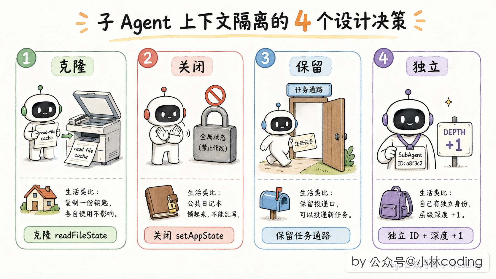
对应到源码里，就是一个叫 createSubagentContext 的函数，我把最能说明上面四个决策的部分精简出来：
// src/utils/forkedAgent.ts:345
export function createSubagentContext(parentContext, overrides): ToolUseContext {
return {
// 决策一：文件读缓存克隆一份
readFileState: cloneFileStateCache(parentContext.readFileState),
// 决策二：写全局状态直接设为空操作
setAppState: () => {},
// 决策三：但任务注册的通路例外保留
setAppStateForTasks: parentContext.setAppStateForTasks ?? parentContext.setAppState,
// 决策四：独立 ID + 深度 +1
agentId: overrides?.agentId ?? createAgentId(),
queryTracking: {
chainId: randomUUID(),
depth: (parentContext.queryTracking?.depth ?? -1) + 1,
},
// ...其他字段略
}
}
你看这几行代码，一一对应上面讲的四个决策：克隆缓存、关掉写权限、保留任务通路、发独立 ID。
看完这块，我的感受是：所谓上下文隔离，不是一刀切地「全隔离」或者「不隔离」，而是按每个状态的语义单独决策。这个细腻劲儿，正是 Claude Code 这种工业级产品稳定跑的根基。
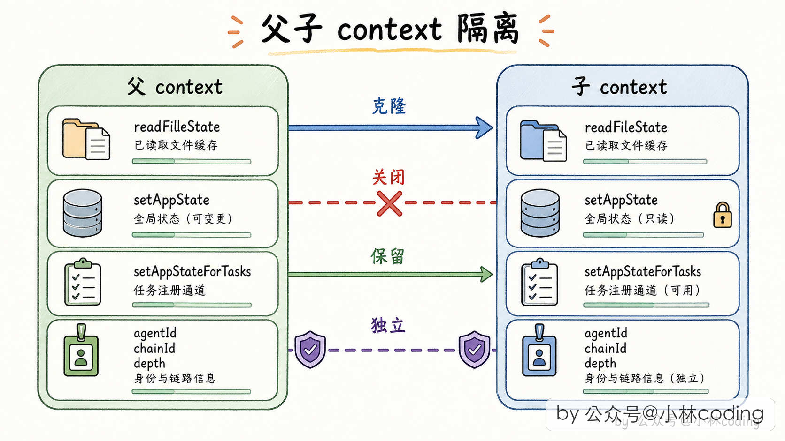
走完「工具隔离」和「上下文隔离」这两道门，一个 subagent 就拿到了干净的工具池 + 干净的运行环境，可以独立跑起来了。那父 agent 和这个跑起来的 subagent，又是怎么互相说话的呢？下一章见真章。
三、父子 Agent 是怎么通信的
隔离机制搞定了，但隔离只是开始，真正决定一个多 agent 系统好不好用的，是它们之间怎么通信。
这一章我来讲 Claude Code 的通信方式。但开讲之前，得先立一个分水岭，不然很容易把人带沟里去：父子之间能怎么通信，取决于你开没开「团队（agent-teams）模式」。
默认形态和团队形态，是两条很不一样的线：
- 默认形态：subagent 更像一次「重型工具调用」，父 agent 派它出去、它跑完把结果交回来。这条线里，父 agent 没法中途给在跑的子 agent 插话，消息基本是子→父 单向通知。
- 团队（agent-teams）模式：开启之后才升级成完整的双向消息驱动，父 agent 能往子 agent 的信箱里扔字条，子 agent 也能回话，真正的双向对讲。
下面两条线分开讲，你就不会糊涂了。
配图意见：父子通信「两条线」对照图。左右两栏，左边「默认形态」画一根从子指向父的单向箭头（标注「只有子→父 完成通知」），右边「团队模式」画父子之间两根来回箭头（标注「父→子 扔字条 + 子→父 通知」）。重点用箭头数量和方向直观表达「默认单向 vs 团队双向」，配色上左栏冷色（克制）、右栏暖色（双向激活）。
默认形态：派出去，跑完把结果交回来
先看默认这条线。这里先停一下，问你一个问题：父 agent 派一个子 agent 出去调研，在子 agent 埋头跑的这段时间里，它俩还能不能说上话？父能不能临时补一句「顺便也看看权限模块」？
凭直觉你可能觉得「应该可以吧」。但默认形态下的答案是：不能。
你跟 Claude Code 说「调研一下认证模块」，它派一个 subagent 出去，这个 subagent 带着独立上下文自己跑，跑完把结果作为一次工具调用的返回值（tool_result）原样交回给父 agent。
注意这条线的关键特征：父 agent 对正在跑的子 agent 是「只能等」的，没法中途塞新指令给它。就是一次「派出去，等结果」，跟你平时调一个普通工具没啥两样。
那又冒出一个新问题：如果子任务跑得特别久，父 agent 干等着不就被卡死了吗？Claude Code 这里有个补丁，叫 auto-background。
如果 subagent 很快跑完（比如 30 秒内），父 agent 就在前台阻塞等，像一次普通工具调用，完事就拿结果继续。但如果 subagent 跑超过 2 分钟还没完，Claude Code 会自动把它转到后台，让父 agent 可以先继续干别的。子任务真完成时，再回头通知父 agent。
这个设计本质上是把同步工具调用自动降级成异步通知的优化。没有它，长任务会一直占着父 agent 的执行权，用户也没法跟父 agent 继续对话。
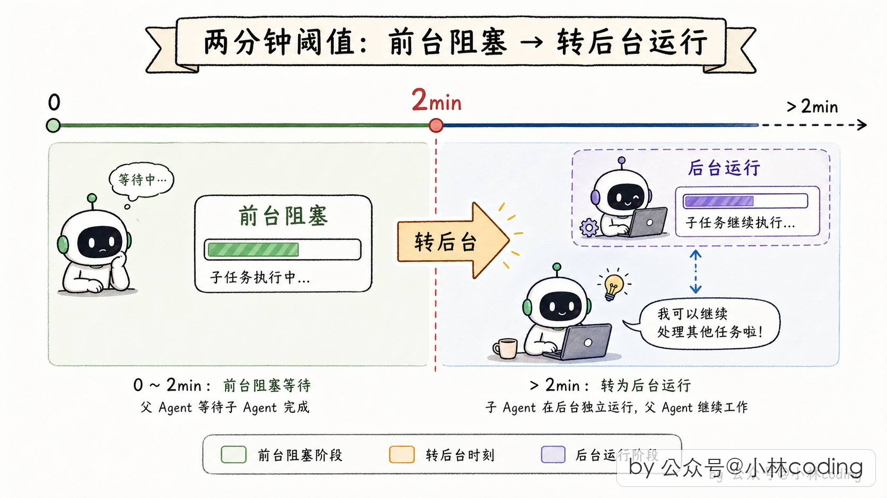
源码里这个「2 分钟阈值」就是一个常量开关，而且它本身也带着 feature 门控，不是无条件开的：
// src/tools/AgentTool/AgentTool.tsx:72
function getAutoBackgroundMs(): number {
if (isEnvTruthy(process.env.CLAUDE_AUTO_BACKGROUND_TASKS)
|| getFeatureValue_CACHED_MAY_BE_STALE('tengu_auto_background_agents', false)) {
return 120_000; // 2 分钟
}
return 0;
}
那子任务转后台之后，完成时怎么告诉父 agent「我干完了」？
最直觉的做法是：给主线程发一个「工具返回结果」事件。但 Claude Code 玩得更骚气，它的设计是：把完成通知拼成一段 XML，伪装成一条用户消息，塞给父 agent 的对话历史。
父 agent 那边看到的就像用户发了一条新消息过来，长这样：
<task-notification>
<task-id>agent-a1b</task-id>
<output-file>/tmp/xxx.txt</output-file>
<status>completed</status>
<summary>Agent "Investigate auth bug" completed</summary>
<result>Found null pointer in src/auth/validate.ts:42...</result>
<usage>
<total_tokens>12345</total_tokens>
<tool_uses>8</tool_uses>
<duration_ms>34567</duration_ms>
</usage>
</task-notification>
📌 配图建议：task-notification XML 渲染示意，高亮各个 tag 的含义
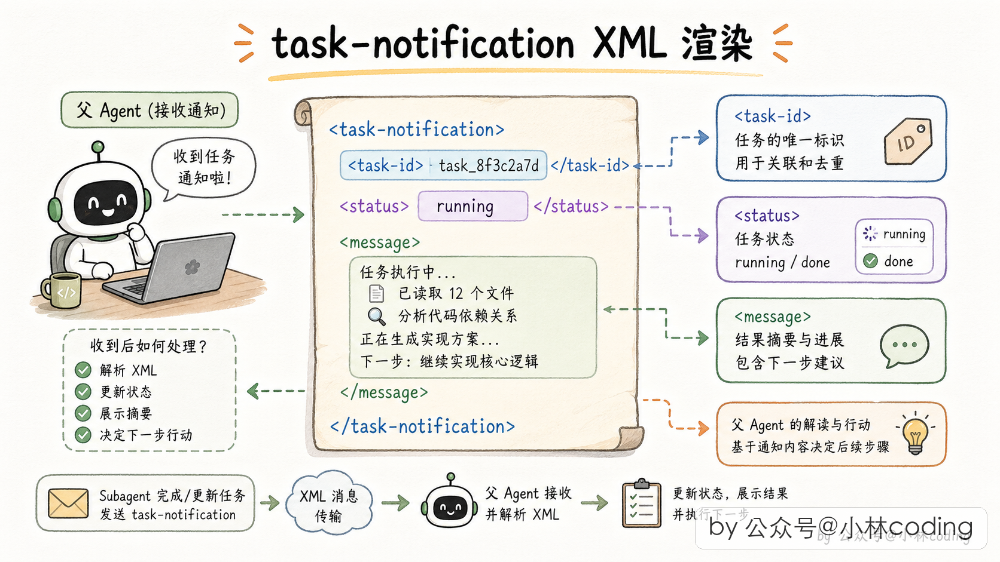
为啥要搞 XML 不用结构化对象？ 这个设计有它的巧妙之处，我特意想明白过。
第一，LLM 对 XML 非常友好。Anthropic 训练 Claude 的时候就强调了 XML 的结构化表达。你把 XML 塞到 prompt 里，LLM 能很自然地解析出语义，不用额外教它。
第二，XML 是纯文本，可以直接塞进对话历史。如果是结构化对象，还得额外走个「工具结果」的字段结构，流程更复杂。
第三，它伪装成用户消息，天然地复用了 agentic loop 的处理逻辑。父 agent 不需要额外的状态机去「等通知」，它就像收到一条新的用户输入一样处理。
这种「把系统事件伪装成对话」的设计思路，在 LLM 应用里是非常值得学的一招。
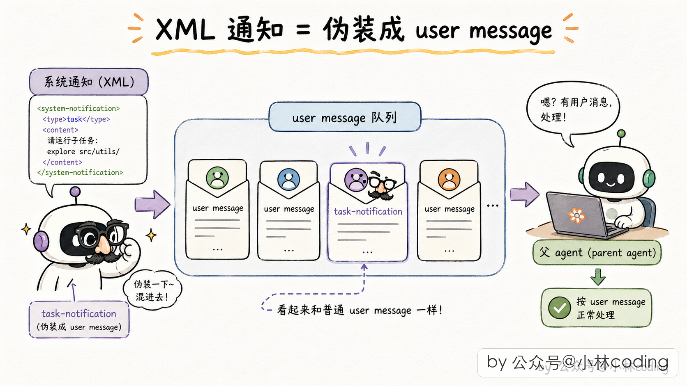
对应到源码里，生成这段 XML 的代码就是在拼字符串：
// src/tasks/LocalAgentTask/LocalAgentTask.tsx:197
const message = `<${TASK_NOTIFICATION_TAG}>
<${TASK_ID_TAG}>${taskId}</${TASK_ID_TAG}>
<${OUTPUT_FILE_TAG}>${outputPath}</${OUTPUT_FILE_TAG}>
<${STATUS_TAG}>${status}</${STATUS_TAG}>
<${SUMMARY_TAG}>${summary}</${SUMMARY_TAG}>${resultSection}${usageSection}
</${TASK_NOTIFICATION_TAG}>`;
enqueuePendingNotification({ value: message, mode: 'task-notification' });
拼完就扔到主 agent 的待处理消息队列里，等主 agent 下一轮循环时当作一条用户消息来处理。
讲到这里，把默认这条线小结一下：父 agent 派出去、等结果，长任务转后台后子 agent 回头发个完成通知。这条线里有「消息」的，基本只有子→父这一个方向的通知，父 agent 没法主动给在跑的子 agent 发新指令。如果你只看默认形态，说「subagent 的消息队列只是用来通知父 agent 的、是单向的」，这个判断是站得住的。
团队（agent-teams）模式：父子之间才真正双向对讲
那「父→子 也能发消息」的双向对讲是什么时候出现的？答案是：开了团队（agent-teams）模式之后。这是 Claude Code 的一个实验特性，外部用户要显式开启（比如带上 --agent-teams 启动），内部默认就开着。
为什么要专门为这个场景设计一套双向通信？我建议你先停个 10 秒想想：如果让你来设计「父 agent 中途给子 agent 发指令」这套通信，你会怎么写？
大概率你脑子里第一反应是「父 agent 调个函数，等 subagent 跑完返回」对吧？这跟我们平时写 RPC 调远程服务的思路一模一样，太自然了。
但我接着追问你两个问题，你看你能不能答上来：
第一个追问：如果 subagent 是个跑 5 分钟的代码评审任务，那这 5 分钟里，父 agent 想临时改个要求，怎么递进去？
第二个追问：如果父 agent 想同时指挥 5 个 subagent 并行干活、随时给它们各自补充指令，你这个「调函数等返回」的方案要怎么改？
是不是有点卡了？「调函数等返回」这种同步思路，根本没法支持「一边跑一边对讲」。Claude Code 正是看穿了这一点，才在团队模式里铺了一套完全不一样的底座：消息驱动。
想象每个 subagent 是公司里一个带「信箱」的独立员工。父 agent 要给它布置新活，就往它信箱里扔一张字条走人，不站在那里等。subagent 自己干完活了，通过另一条信道把结果送回主 agent 的案头。
这个「信箱 + 字条」的模型，本质上就是消息队列 + 异步通知。没有直接的函数返回，没有主线程阻塞，所有沟通都是消息。
配图意见：沿用原「函数调用 vs 消息驱动」对比图，无需重画。只需把图注/标题里若有「Claude Code 的通信用消息驱动」这类绝对说法，收窄成「团队模式选了消息驱动」，避免读者误以为这是默认形态的通用机制。
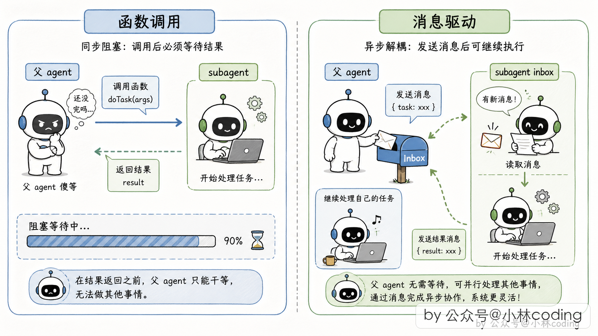
先看每个 subagent 的「员工档案」。Claude Code 给每个 subagent 建了一份档案：一个对象，里面记着这个 subagent 的 ID、当前状态（等待中/跑步中/已完成/失败/被停了）、它的信箱（待处理消息数组）、已经产生的结果、进度信息等等。
要说明的是，这份档案本身是通用的，不是团队模式才有，默认形态下那套「转后台、发完成通知」也是靠它来追踪每个子任务的。我们这里要重点盯住的，是里面那个信箱字段，它才是团队模式真正用起来、支撑起「父→子 扔字条」的部分。
所有跟 subagent 有关的读写（父要发消息，子要改状态），都通过全局的 task 表里这份档案来进行。
对应到源码里的类型定义大致长这样：
// src/tasks/LocalAgentTask/LocalAgentTask.tsx:116
export type LocalAgentTaskState = TaskStateBase & {
type: 'local_agent';
agentId: string; // 子 agent 唯一 ID
prompt: string; // 初始任务
agentType: string;
status: TaskStatus; // pending/running/completed/failed/killed
result?: AgentToolResult; // 完成后的结果
progress?: AgentProgress; // 进度
isBackgrounded: boolean; // 是否已转后台
pendingMessages: string[]; // 信箱：父 agent 扔进来的待处理消息
messages?: Message[];
};
重点关注的是 pendingMessages 数组，它就是我们说的「信箱」，父 agent 往里扔字条，子 agent 自己来捡。
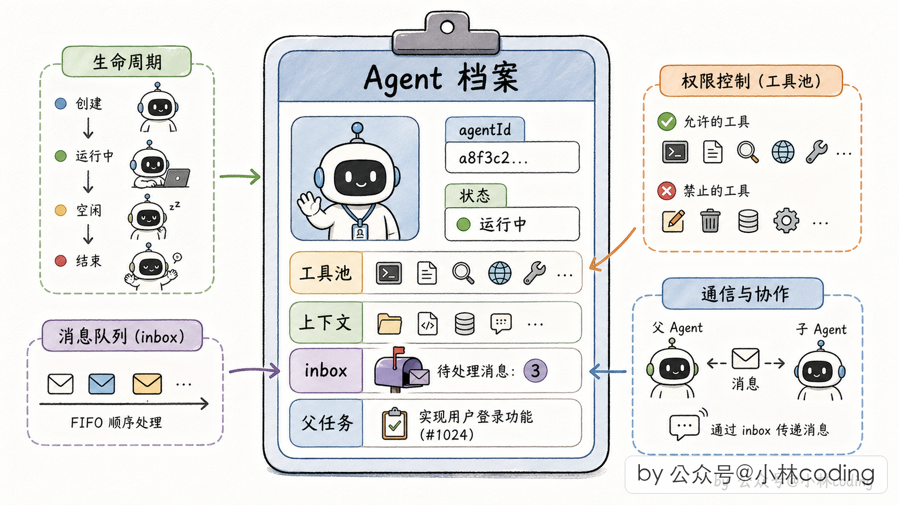
再看父 → 子怎么扔字条。父 agent 要给跑着的 subagent 发指令的流程，拆开看就是两步：
第一步：父往信箱扔字条。父 agent 在自己的 agentic loop 里调用一个叫 SendMessage 的工具，工具内部做的事情很简单：往目标 subagent 档案的信箱末尾追加一条消息，然后立刻返回。父 agent 扔完走人，不等子 agent 看。
这里要点一句关键的：SendMessage 这个工具本身就是团队模式才启用的。它的 isEnabled 判断挂的就是「有没有开 agent-teams」这个开关，没开团队模式，主 agent 的工具箱里压根没有 SendMessage，父→子 这条路自然就不存在。这也是前面说「默认形态是单向」的根本原因。
第二步：子在循环边界自己捡字条。subagent 自己的 agentic loop 在每一轮工具调用结束后，都会去瞄一眼自己的信箱。如果有新字条，就把这些字条作为「用户消息」注入自己的对话历史，然后带着新消息进入下一轮 LLM 调用。
这里还有个细节设计特别巧：如果子 agent 已经干完活停下来了（completed 或者被手动停了），父 agent 发 SendMessage 会怎样？
Claude Code 的做法是：自动把它唤醒。从磁盘上那份已经保存的对话 transcript 里，把子 agent 的完整对话历史恢复出来，拼上新消息，重新跑起来。这个唤醒机制很妙，意味着 subagent 即使完成了也不是「死了」，父 agent 随时可以叫醒它继续干。
配图意见：沿用原父子通信时序图，无需重画。但标题/图注要补上「团队模式下」这个前提（比如「团队模式下的父子双向通信时序」），别让读者误以为这套父→子 + 子→父 的完整来回是默认形态的通用流程。
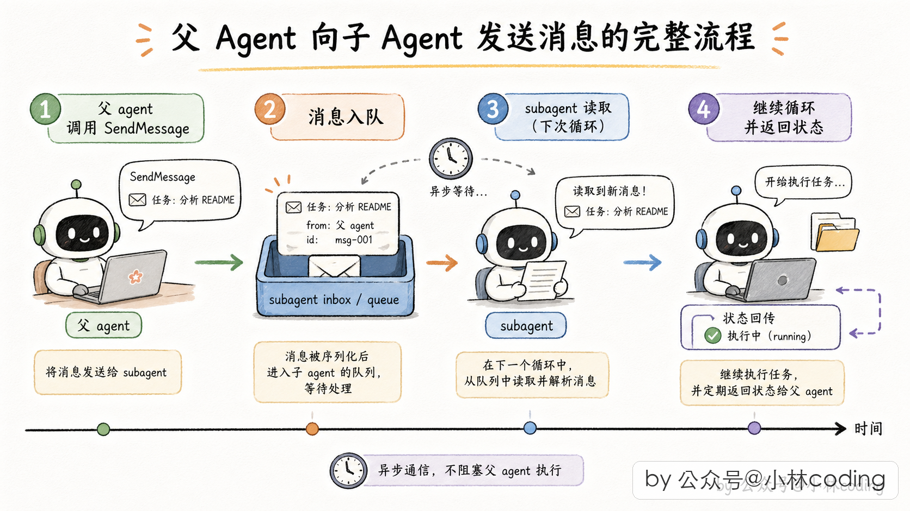
对应到源码，SendMessage 工具里的核心逻辑长这样：
// src/tools/SendMessageTool/SendMessageTool.ts:800
const task = appState.tasks[agentId]
if (isLocalAgentTask(task) && !isMainSessionTask(task)) {
if (task.status === 'running') {
queuePendingMessage(agentId, input.message, context.setAppStateForTasks)
return { data: { success: true, message: 'Message queued...' } }
}
// 任务已停止，自动唤醒从 transcript 里恢复
const result = await resumeAgentBackground({ agentId, prompt: input.message, ... })
}
可以看到就是两个分支：正在跑就扔信箱，已经停了就唤醒。
「扔信箱」这个动作本身的实现就 4 行：
// src/tasks/LocalAgentTask/LocalAgentTask.tsx:162
export function queuePendingMessage(taskId, msg, setAppState): void {
updateTaskState<LocalAgentTaskState>(taskId, setAppState, task => ({
...task,
pendingMessages: [...task.pendingMessages, msg]
}));
}
纯纯的「追加到数组末尾」。子→父 那条信道，复用的就是默认形态里讲过的那套 task-notification（伪装成用户消息）。两个方向凑齐，团队模式下的父子通信才算真正双向。
回头看通信设计的全貌
到这里我们把两条线都讲清楚了，串起来看：
- 默认形态：父 agent 派子 agent 出去、等结果，长任务转后台后子 agent 回头发完成通知。消息通路基本是子→父 单向通知，父 agent 不能中途插话。
- 团队（agent-teams）模式：在上面基础上，补齐父→子这条路（SendMessage 往信箱扔字条），凑成完整的双向消息驱动。
团队模式那套双向消息体系，落到底就两个关键字：异步 + 消息。没有直接函数调用，没有锁，没有回调地狱，全靠读写共享的任务状态和消息队列。
配图意见：这张「通信全貌」图建议重画。原图若只画了一套双向通信，现在撑不起「两条线」这个新框架了。改成上下或左右两栏：一栏「默认形态」画「父派出 → 子跑 →（超 2 分钟转后台）→ 子发完成通知」的单向链路，一栏「团队模式」在其上叠加「父→子 SendMessage 扔字条」的回路。重点让读者一眼看出：团队模式是在默认形态之上「补了父→子这一条」，而不是另起炉灶。
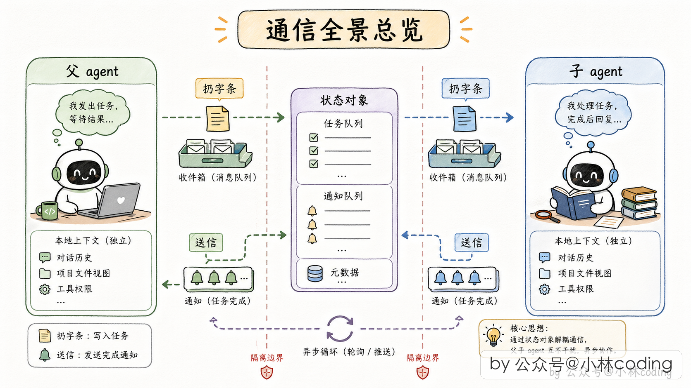
而且不管走哪条线，这套「不阻塞」的底子都带来一个特别大的好处：天然支持多 subagent 并发。只要父 agent 不傻等着某个子跑完，它就能同时派 5 个 subagent 出去，谁先完成谁先给它发通知，父 agent 按到达顺序处理就行。并发不是团队模式的专利，默认形态配合 auto-background 也能并发，后面要讲的 Coordinator 模式更是把并发拉到极致。
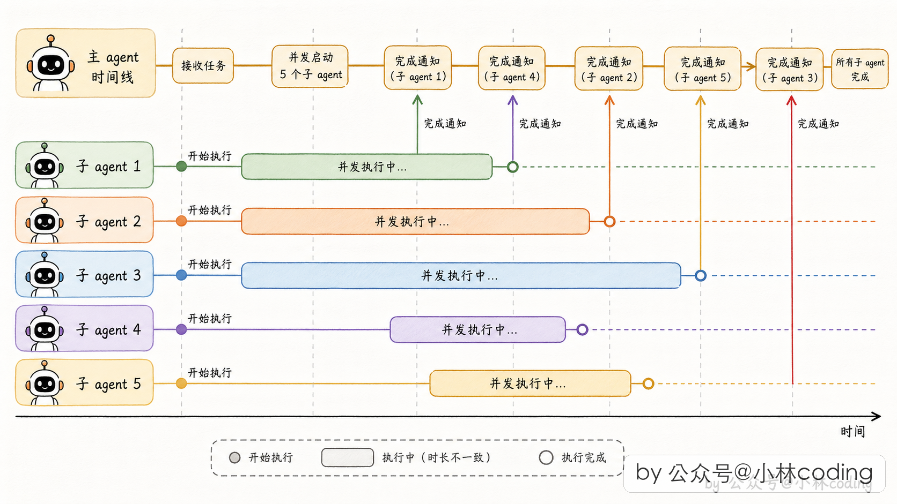
下一章，我们再讲一个特别精妙的优化：Fork Subagent。
四、Fork Subagent：省钱又省延迟的隐藏大招
前面讲的常规 subagent 已经是主流玩法了，但 Claude Code 还有一个更精妙的机制，叫 Fork Subagent。这个机制有点隐蔽，用起来是透明的，但对成本和延迟的优化非常显著。
我先抛两个问题让你估算下，先别往下翻看答案：
第一，Claude Code 的 system prompt 大概有多长？是几百 token、几千 token，还是上万 token？ 第二，每派一个 subagent，如果它有自己独立的 system prompt，LLM API 那边对这段 prompt 是从头算一遍，还是有办法复用？
subagent 的隐藏成本
公布答案：Claude Code 的 system prompt 长度是上万 token，里面塞了大量的工具说明、规范约定、用户上下文。
而每派一个 subagent，如果它有独立的 system prompt（内置的 Explore、Plan 这些都有独立的），LLM API 那边就得对这一万多 token 重新从头算一遍，就跟没见过似的。
这有两个代价：钱（input token 重新算钱）和延迟（首 token 等更久）。在生产环境里，subagent 派得越频繁，这个开销线性放大，是个很可怕的成本黑洞。
Anthropic 有个 prompt 缓存机制可以缓解这事。简单说：API 请求里如果前缀跟之前某次请求一样，这段前缀可以不重新算，直接走缓存，价钱只要原来的 10%，延迟也大幅降低。
到这儿我再问你一个关键的：prompt 缓存命中的条件是「内容大致相同」就行，还是「字符级别相同」，还是「字节级别完全相同」？再猜一下。
公布：是最严格的那个，字节级别完全相同。系统 prompt 一个字不一样、工具列表顺序不一样、甚至空格位置不一样，都会直接没命中缓存。
是不是比你想的严格多了？
那既然这么严，能不能设计一种 subagent，它的 system prompt 和工具池跟父 agent 完全一样，这样就能复用父的缓存了？这就是 Fork Subagent 的起点。
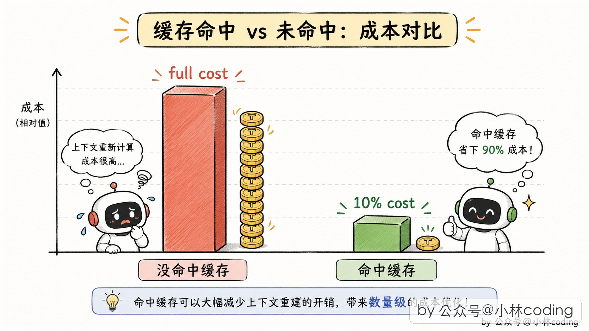
Fork 的核心思路：派一个「字节级相同」的分身
Fork Subagent 的直觉是这样的：派一个子 agent 出去干活，但这个子 agent 的 API 请求前缀跟父 agent 一模一样，让 Anthropic 那边一看：「哦这个前缀我认识」，走缓存。
这里的「一模一样」要做到什么程度？字节级。一个字节不对都不行。
具体要对齐哪些东西呢？有五样必须跟父 agent 完全一致：
- 系统 prompt 的内容（最核心的，对齐第一位）
- 用户上下文（拼在消息前的那部分动态内容，比如当前项目的 CLAUDE.md 内容）
- 系统上下文（拼在 system prompt 后的环境信息）
- 工具池的顺序和定义（工具的字段结构会被序列化进 API 请求，顺序都不能变）
- 对话历史的前缀（决定了 user/assistant 消息序列中「从哪里开始分叉」）
这五样只要有一样跟父 agent 字节不一致，缓存就直接没了。
对应到源码里，Claude Code 专门定义了一个类型（CacheSafeParams），把这五项打包：
// src/utils/forkedAgent.ts:57
export type CacheSafeParams = {
/** System prompt - 必须跟父完全一致 */
systemPrompt: SystemPrompt
/** User context - 拼接在消息前，影响缓存 */
userContext: { [k: string]: string }
/** System context - 拼接在 system prompt 后，影响缓存 */
systemContext: { [k: string]: string }
/** 工具池、模型等所在的上下文 */
toolUseContext: ToolUseContext
/** 父 agent 的消息前缀，用于缓存共享 */
forkContextMessages: Message[]
}
你看这个类型的意思很明显：凡是会影响缓存命中的字段，我全列在这儿，你 Fork 的时候严格按这份清单跟父 agent 对齐。
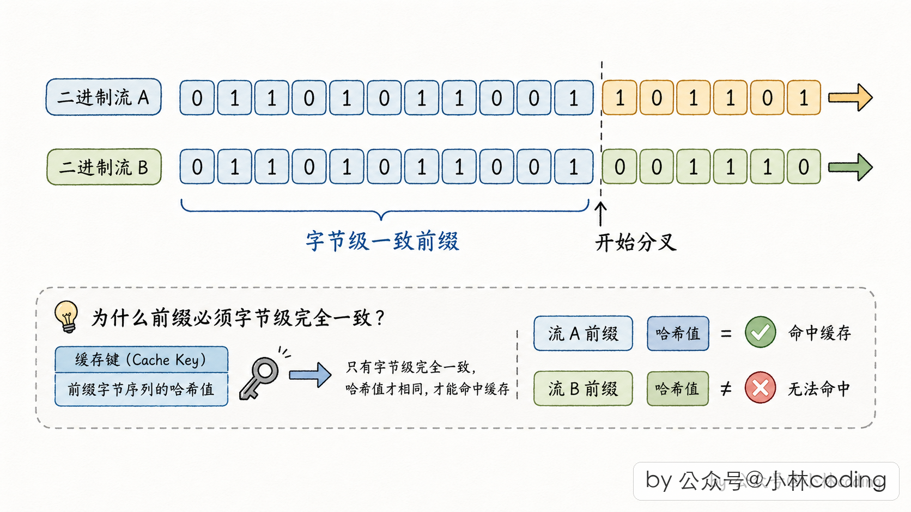
一个有意思的细节：system prompt 不重新生成
Fork Subagent 的合成定义里有个有意思的细节，值得单独说。
正常一个 subagent 有个生成 system prompt 的函数，跑的时候现生成一段 prompt 文本。但 Fork 机制用的那个 subagent 的生成函数直接返回空字符串：
// src/tools/AgentTool/forkSubagent.ts:60
export const FORK_AGENT = {
agentType: FORK_SUBAGENT_TYPE,
tools: ['*'], // 用父的完整工具池
maxTurns: 200,
model: 'inherit', // 继承父的模型
permissionMode: 'bubble', // 权限弹窗浮到父终端
source: 'built-in',
getSystemPrompt: () => '', // 返回空串！
} satisfies BuiltInAgentDefinition
这不是偷懒，而是精心设计的。
为啥要返回空串？因为 Fork subagent 的 system prompt 根本不走这个函数生成，而是直接用父 agent 已经渲染好的那份字节。
原因很简单：如果重新调一次生成函数，里面可能有些小差异（比如某个功能开关的缓存状态变了、某个动态字段的值变了），生成出来的 prompt 跟父 agent 就可能差一个字符，缓存就没了。
最稳的办法是：把父 agent 那边已经渲染出来的 prompt，作为字节原样拿过来用，一个字节都不动。
这个细节非常工业级，普通人写 agent 系统根本想不到。
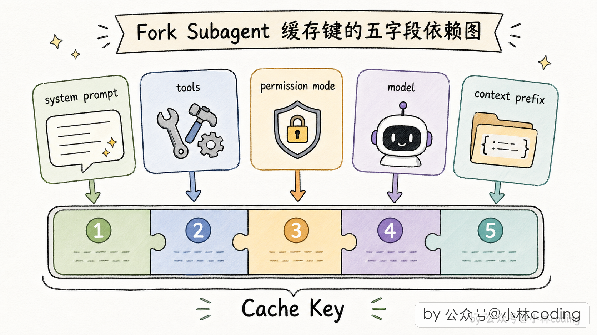
什么时候用 Fork，什么时候用常规 subagent？
Fork 机制不是万能的，它的适用场景很特定：你希望子 agent 完全继承父 agent 的整个上下文（对话历史、system prompt、工具池），只是「派个分身去试试另一条路」。
比如「Ctrl+F 生成 PR 描述」「运行 /btw 命令做 post-turn 总结」，这些任务需要父 agent 的完整上下文，但又不希望污染父 agent 的主循环。
相反，如果你的任务有明确的专业分工（比如派一个专门搜代码的 agent、派一个专门做规划的 agent），那就用常规 subagent，它们的 system prompt 是定制的，Fork 机制反而不适用。
还有一个关键点：Fork 机制和 Coordinator 模式是互斥的。Coordinator 模式下主 agent 已经是个纯协调者了，它派的 worker 本来就是异步的，不需要 Fork 这种「轻量分身」机制。两个机制职责重叠，就只留一个：
// src/tools/AgentTool/forkSubagent.ts:32
export function isForkSubagentEnabled(): boolean {
if (feature('FORK_SUBAGENT')) {
if (isCoordinatorMode()) return false // 互斥！
if (getIsNonInteractiveSession()) return false
return true
}
return false
}
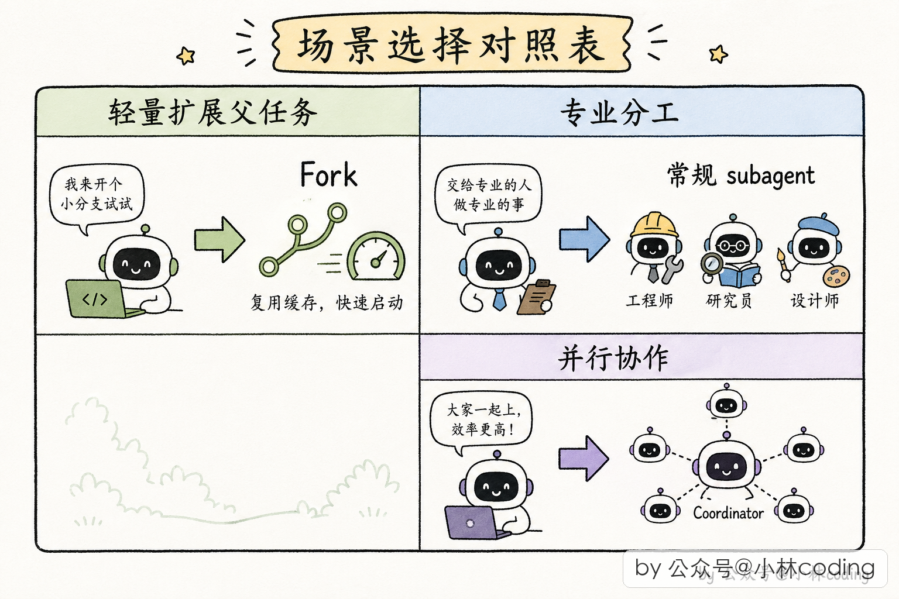
Fork 的工程启示
Fork 机制我想单独说下它对我们的启示。
很多人做 agent 系统只关心「能不能跑起来」，不关心「跑起来要花多少钱」。但在生产环境，这两个是一回事。Claude Code 靠 Fork 机制，在缓存友好的场景下能把 subagent 的成本降到原来的 10% 左右。
这意味着什么？意味着你的 subagent 可以调得更频繁。原本成本考虑不敢派的活，现在都能派了，这反过来又让整个 agent 系统的能力边界扩大了。
所以成本优化本身就是能力的一部分。这个思路我觉得对自建 agent 系统的朋友特别重要。
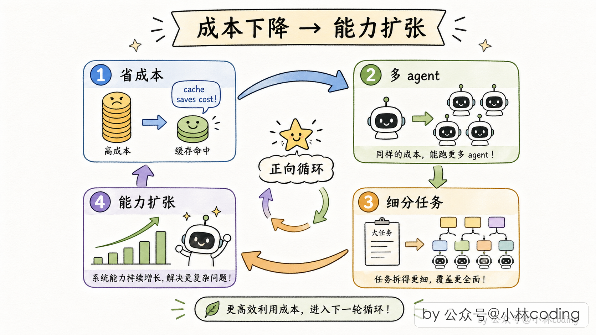
好了，讲完 Fork，下面进入整篇文章最「多 agent」的一章：Coordinator 模式。
五、Coordinator 模式：真正的多 Agent 并行协作
前面讲的 subagent（不管是常规的还是 Fork 的），本质都是父子结构：父 agent 派一个子，自己该干啥干啥，子完成了通知一声。
但如果你的任务量很大，需要一堆 agent 同时开工呢？比如一个大的代码迁移，要并行调研 10 个模块。这时候父子结构就显得单薄了。
Claude Code 为此设计了一个专门的模式：Coordinator 模式。这是 Claude Code 多 agent 设计里最「多 agent」的部分，也是最能打的地方。
Coordinator 模式的启用
这个模式不是默认开的，要显式打开。需要同时满足两个条件：编译时的功能开关和运行时的环境变量 CLAUDE_CODE_COORDINATOR_MODE=1。
// src/coordinator/coordinatorMode.ts:36
export function isCoordinatorMode(): boolean {
if (feature('COORDINATOR_MODE')) {
return isEnvTruthy(process.env.CLAUDE_CODE_COORDINATOR_MODE)
}
return false
}
开启之后，主 agent 的行为模式会发生根本性变化。
核心设计：主 agent 退化成「纯协调者」
常规模式下，主 agent 是「全能型选手」：它读代码、写代码、跑测试、做规划全都干，只在需要时才派 subagent 帮一把。
Coordinator 模式下，主 agent 不干实际工作了，它只做三件事：派 worker、收结果、合成答案。
这个角色转换是通过主 agent 的 system prompt 强制约束出来的。打开源码里那段 prompt，开头就写得很明白：
You are Claude Code, an AI assistant that orchestrates software engineering
tasks across multiple workers.
## 1. Your Role
You are a **coordinator**. Your job is to:
- Help the user achieve their goal
- Direct workers to research, implement and verify code changes
- Synthesize results and communicate with the user
- Answer questions directly when possible, don't delegate work
that you can handle without tools
翻译一下：你的身份是协调者，你的工作是指挥 worker 去做研究、实现、验证，然后自己合成结果跟用户交流。能自己回答的问题不要派人去做。
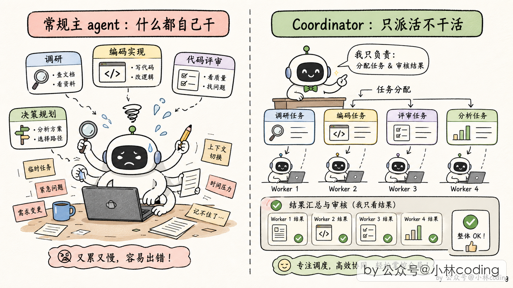
三大内部工具
既然主 agent 要协调，就得有专门的协调工具。Coordinator 模式下，主 agent 多了一套「团队管理」工具箱：
- 派 worker 的工具：派一个新 worker 出去干某件具体的活，派完立刻返回 worker 的 ID。
- 创建/解散团队的工具：批量管理 worker 组。
- 给 worker 发消息的工具：给已经派出去的 worker 发后续指令（也就是前面讲的 SendMessage），因为 worker 的上下文还在，续命比重新派一个更省钱。
- 合成最终输出的工具：协调者合成完答案后，通过这个工具把最终回复交给用户。
- 停止 worker 的工具：当协调者意识到某个 worker 跑错方向时，把它停掉省 token。
这套工具放在一起，协调者就有了一整套指挥团队的 API。
📌 配图建议：协调者工具箱图，把五个工具画成五个按钮，标注每个按钮的作用
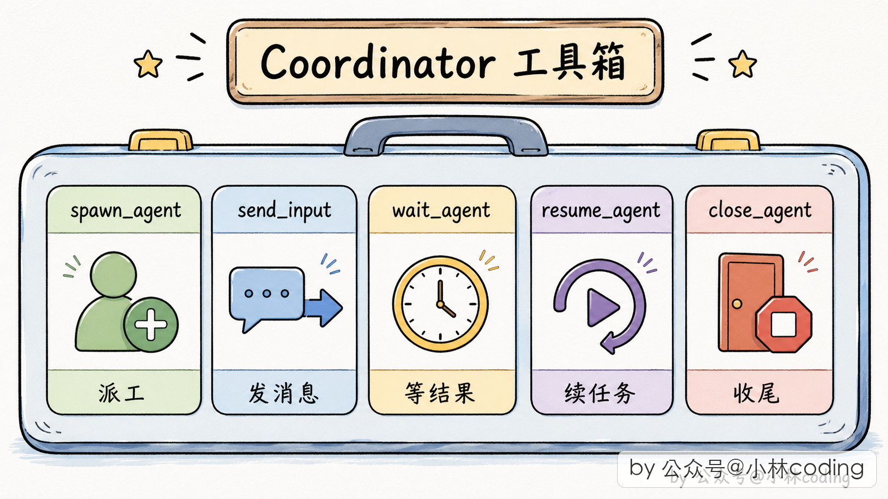
对应到源码里，有这么一组常量把这几样工具圈在一起：
// src/coordinator/coordinatorMode.ts:29
const INTERNAL_WORKER_TOOLS = new Set([
TEAM_CREATE_TOOL_NAME, // 创建 worker 团队
TEAM_DELETE_TOOL_NAME, // 解散团队
SEND_MESSAGE_TOOL_NAME, // 给 worker 发消息
SYNTHETIC_OUTPUT_TOOL_NAME, // 合成最终输出给用户
])
这里得说清楚它的真实用途，免得误会：这组常量其实是一张给 worker 用的「黑名单」。Coordinator 模式下，系统会把这几样工具从 worker 的工具池里摘掉，让 worker 只管干活、没法反过来去创建团队、给别人发消息、调度别人。所以它不是「只有协调者才有这些工具」，而是「这些协调专用的工具，不发给 worker」。特别是 SendMessage，它本身并不是 Coordinator 模式专属的东西，前面第三章讲的团队（agent-teams）模式里，父 agent 用的就是它。
顺带厘清一个容易混的点：agent-teams（团队/队友）模式和 Coordinator 模式是两个独立的开关。前者管的是「父子之间双向发消息、派队友」，后者是更进一步的「主 agent 退化成纯协调者」的编排模式，别把两者当成一回事。
并行才是真本事
Coordinator 模式的 prompt 里有一句我特别喜欢：
Parallelism is your superpower. Workers are async. Launch independent workers concurrently whenever possible, don't serialize work that can run simultaneously and look for opportunities to fan out.
翻译一下：并行是你的超能力，worker 全是异步的，能并行的绝不串行，多找机会一口气派一堆出去。
这句话背后是一个很关键的工程事实：Claude Code 的派 worker 工具调用可以在同一条 assistant 消息里出现多次，底层会一起并发执行，不是一个跑完再跑下一个。
所以协调者要做的就是在一次 LLM 回合里，一口气生成多个派 worker 的工具调用：
派 worker 调研 auth 模块
派 worker 调研 session 模块
派 worker 调研 token 模块
这三个调用同时启动，三个 worker 同时干活，协调者等通知一条条返回。
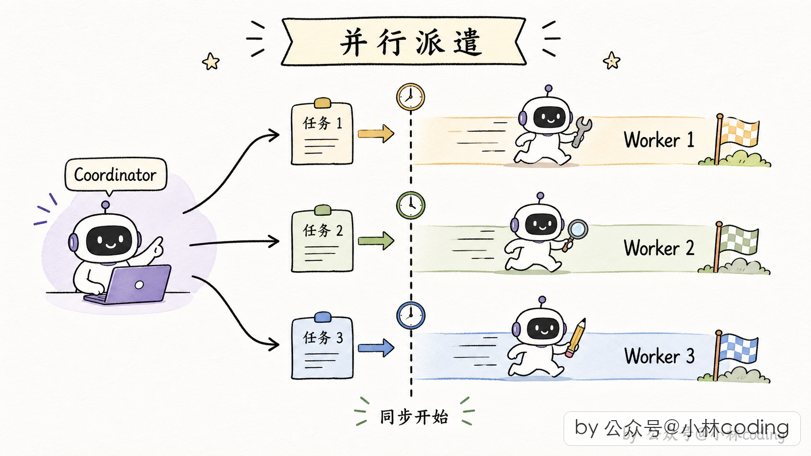
对比一下：
- 串行：派 worker1 → 等 → 结果 → 派 worker2 → 等 → 结果 → 派 worker3... 用户等十分钟
- 并行：同时派三个 worker → 三份结果陆续到 → 用户等三分钟多一点
这就是「并行是超能力」的真正含义。工业级多 agent 系统，没有并行就没有可用性。
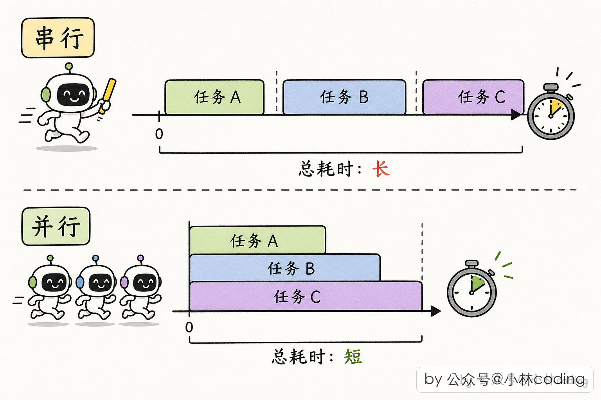
协调者的「任务流水线」
Coordinator 模式下，一个典型的任务流程被切成四个阶段：
| 阶段 | 谁来做 | 目的 |
|---|---|---|
| 调研 | Workers（并行） | 调查代码库、找文件、理解问题 |
| 合成 | 协调者本人 | 读完发现、理解问题、写实现规格 |
| 实现 | Workers | 按规格做具体修改、提交 |
| 验证 | Workers | 测试改动是否真的工作 |
注意中间的「合成」阶段是协调者亲自做，这是协调者存在的意义：理解全局，做决策。prompt 里反复强调：不要偷懒让 worker「based on your findings, implement the fix」，而是自己把 findings 读懂、写成具体的规格再派下去。
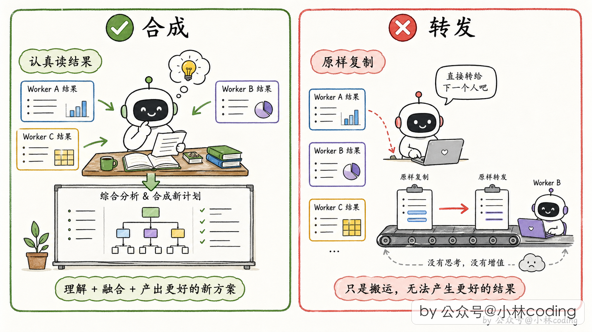
这是一个非常重要的 multi-agent 设计哲学：协调者必须「理解」而不能「转发」。如果协调者只是转发，它就没有存在价值，worker 直接跟用户对话就行了。
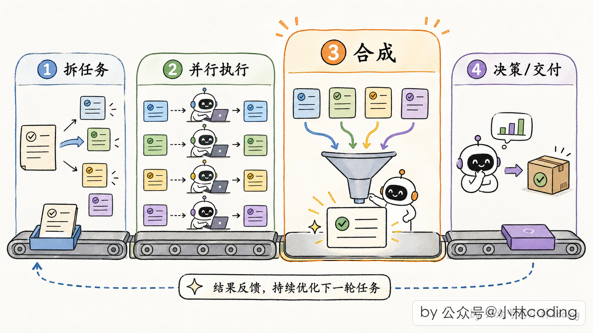
Continue vs Spawn：老 worker 还是新 worker？
协调者要持续派活，遇到一个新任务，是给老 worker 发消息续命，还是派个新 worker 从头开始？这是个有经验才能做好的决策。
Claude Code 的 prompt 里给出了一张决策表，我总结一下核心逻辑：
- 如果新任务跟 worker 现有上下文高度相关（比如刚查的文件现在要改），续命老 worker，因为它已经「知道」那些文件了。
- 如果新任务跟 worker 现有上下文没关系，或者之前 worker 的工作走偏了，派新 worker，避免旧上下文干扰判断。
- 验证这种需要「新鲜眼光」的工作，永远派新 worker，不能让刚写完代码的 worker 自己验自己。
这个设计其实也挺反映人类团队合作的直觉：有的活就该让懂上下文的人接着干（沟通成本低），有的活就该换个人做（避免认知偏差）。
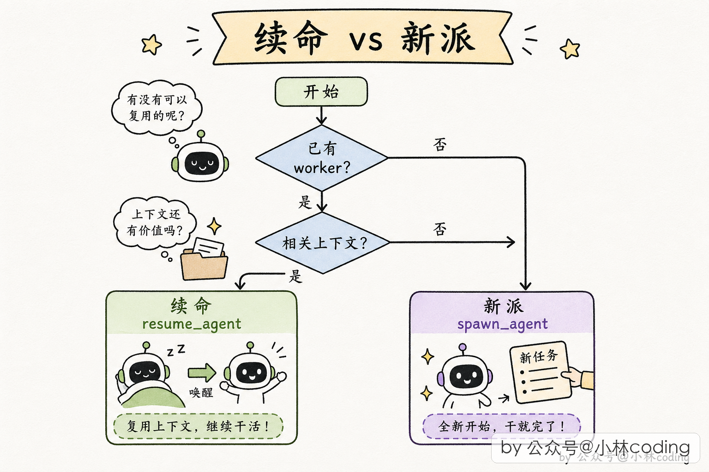
Worker 的工具限制
Coordinator 模式下，worker 拿到的工具有什么不同？关键在于：协调者专属的那套内部工具（创建团队、发消息、合成输出等等），不给 worker 用。worker 不需要再去协调别人，它的活是干事情。
这其实是一个递归防护：如果 worker 也能派 worker，整个系统就变成递归树了，没完没了。通过工具白名单把 worker 的「派人权」收回，让系统结构保持「一个协调者 + 一堆 worker」的扁平形态。
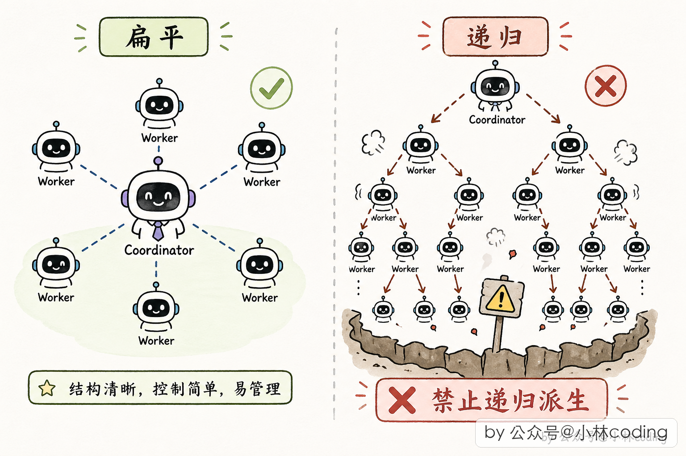
跟常规 subagent 对比
讲完这些我们对比一下 Coordinator 模式和常规 subagent：
| 维度 | 常规 subagent | Coordinator 模式 |
|---|---|---|
| 主 agent 角色 | 全能选手 | 纯协调者 |
| subagent 执行 | 同步（2 分钟后才转后台） | 默认异步 |
| 并发程度 | 偶尔并发 | 最大化并发 |
| 适合场景 | 单个任务 + 临时帮手 | 大任务 + 高并发拆解 |
| 系统形态 | 父子树 | 协调者 + worker 扁平层 |
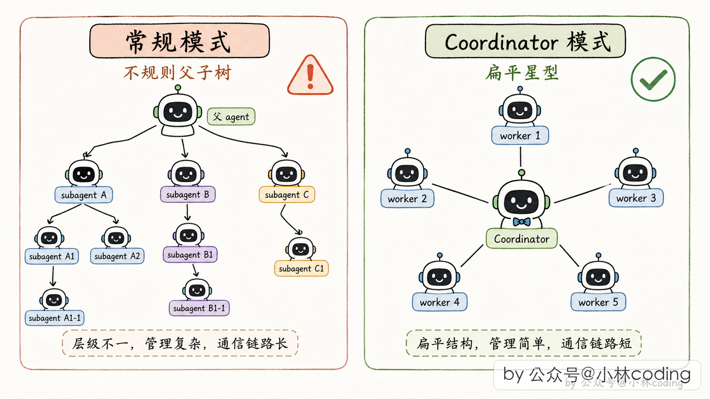
Coordinator 模式的工程启示
讲完 Coordinator，我想提炼几条值得学的设计思想。
第一，角色分离。协调和干活是两件事，不要让同一个 agent 身兼二职。角色清晰的系统更稳定。
第二，并发优先。异步 + 消息队列是并发的基础，有了这套基础，多 agent 才能真正发挥威力。
第三，合成不转发。协调者要理解中间结果，不能把它当传话筒。这是 Multi-Agent 系统里最容易踩坑的一点。
第四，扁平不递归。通过工具权限把层级限制在两层（协调者 + worker），避免失控的递归嵌套。
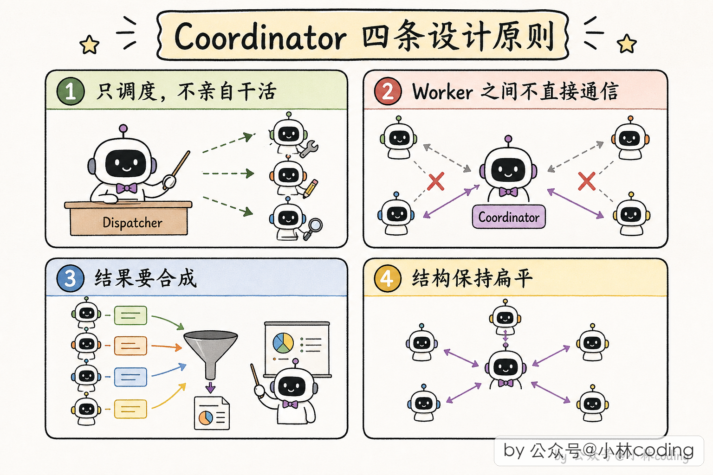
六、5 条 Multi-Agent 设计原则
Claude Code 的源码扒得差不多了。我把前面讲的所有东西浓缩一下，沉淀成 5 条可以直接用到自己项目、也可以直接用到面试答案里的设计原则。
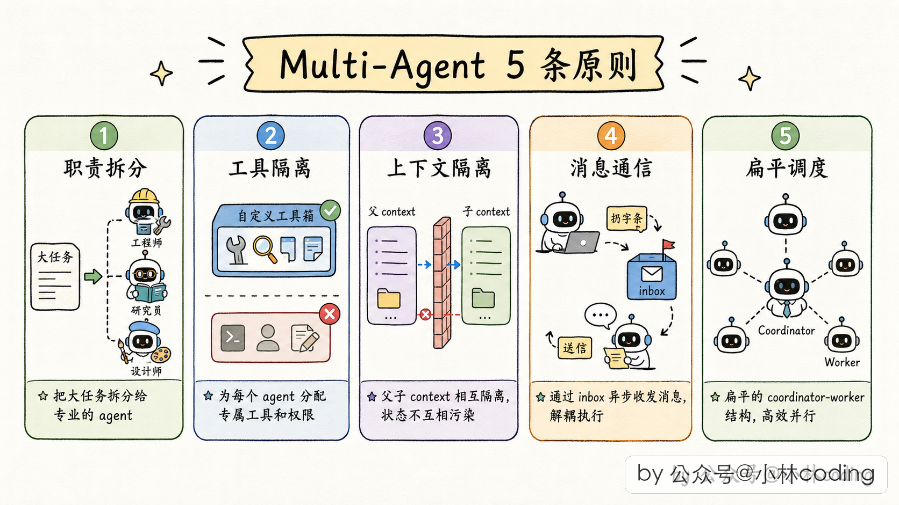
原则 1：上下文隔离要按字段粒度做
这是我最想强调的一条。很多 agent 框架的「隔离」就是粗暴地给 subagent 一个空 context，结果缺这缺那一堆 bug。
Claude Code 的做法是：每个状态单独决策。读文件缓存克隆（避免污染），写全局状态关掉（避免两边抢），任务注册通路保留（不然孤儿进程没人回收），深度计数 +1（可追踪，防失控嵌套）。
做多 agent 系统时，对着父 agent 的每项状态问一句：「子 agent 拿这个状态干啥？会不会影响父？」，就能避开大部分坑。
原则 2：通信走消息，不走函数调用
父 → 子：写入子 agent 的消息队列，子 agent 下一轮循环自己读取。
子 → 父：把完成通知包装成 XML 消息，伪装成用户消息注入父 agent 对话。
这套模型的好处：天然异步、天然支持并发、天然兼容 agentic loop、天然持久化（消息都能落盘）。
要补一句严谨的：上面这套完整的双向消息驱动，是 Claude Code 团队（agent-teams）模式打开后的形态。默认的常规 subagent 更接近「同步派发 + 子→父 完成通知」，父→子 这条主动发消息的路是团队模式才接通的。面试时把这个边界讲清楚，比笼统说「双向」更显你真读过源码。
如果你问面试官「你们的多 agent 之间怎么通信」，把这套答出来，基本就到位了。
原则 3：工具权限要分级管控
全局黑名单（防递归、防乱问用户），类型黑名单（自定义 agent 更严），异步白名单（后台 agent 只能用子集）。
每种 agent 按自己的场景配工具，不要一刀切。
原则 4：缓存友好是一种架构能力
API 成本和延迟对生产环境 agent 来说是能力的一部分。设计 subagent 的时候，考虑它的 prompt 前缀能不能复用父 agent 的缓存，能省 80-90% 的成本。
Claude Code 那套「严格锁定缓存前缀 + 复用父 agent 已渲染字节」的思路，是这方面的教科书式实现。
原则 5：并行优先 + 协调者合成
真正的多 agent 系统威力在并发。通过异步消息和消息队列做基础，通过协调者做合成，避免「大 agent 大循环什么都自己扛」的窘境。
并且协调者要亲自合成，不能当传话筒。
这 5 条原则背后，其实都能看到 Claude Code 源码里的清晰落点。我建议你别光记这些原则，下次看到 Multi-Agent 相关的东西，都拿这 5 条去对照，会迅速看出对方系统的深浅。
最后
写到这里，Claude Code 的多 Agent 机制基本就扒完了。
回过头看，Claude Code 这套系统不是简单的「一个主 agent 嵌几个 subagent」那么朴素。它在架构、通信、并发、成本、隔离每一个维度都做了精致的设计：
- 按字段粒度做的上下文隔离，既不让 subagent 污染父 agent，又保留了必要的通路。
- 消息队列 + XML 通知支撑起异步父子通信，让并发成为可能。
- Fork Subagent 的缓存前缀复用，把成本打到缓存友好的极致。
- Coordinator 模式 把主 agent 彻底解放成纯协调者，让多 worker 真正并行起来。
每一块拆开看都不是啥复杂技术，但组合在一起，就成了一个能支撑 Anthropic 这种级别产品的工业级多 agent 系统。
今天分享都到这里，我们下篇见！